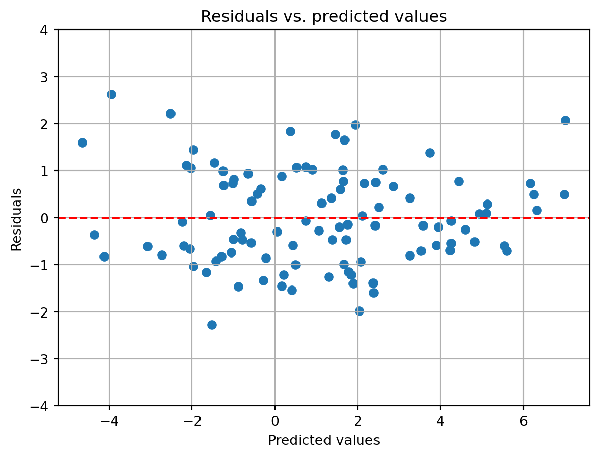

# import python packages we will work with here
import numpy as np
import pandas as pd
import statsmodels.api as sm
import matplotlib.pyplot as plt
# seed our random number generator to ensure reproducibility
from numpy.random import MT19937
from numpy.random import RandomState, SeedSequence
rs = RandomState(MT19937(SeedSequence(1)))Regression 1
Today we are going to cover regression with linear models. We will start with the simplest case, just two data points, and work our way up to the general linear model that handles multiple data points and multiple features. Derivations will be shown at each stage to emphasize the mathematical underpinnings of these models and their analytical symmetry. To complement this, whenever possible visualizations will be provided to help build intuition about the models and their behavior.
Single regression: fitting a straight line
Often you will collect data by taking repeated measurements of a thing, which we will call \boldsymbol{y}. With each measurement, you also measure another thing, or take notes about the situation occurring during the measurement, which we will call \boldsymbol{x}. Here \boldsymbol{x} and \boldsymbol{y} are vectors each of length N, the number of measurements. We will think of \boldsymbol{x} as the independent variable, which is affecting the state of \boldsymbol{y}. \boldsymbol{x} can be under our control or not. \boldsymbol{y} is referred to as the dependent variable, because its state depends on \boldsymbol{x}.
Note: We will be doing some linear algebra in these lectures, so to keep things clear about the dimensionality of the variables we are working with, we will adopt the following convention:
- Scalars will be represented by unbolded letters (e.g. a, b, N)
- Vectors will be bolded lowercase letters (e.g. \boldsymbol{a}, \boldsymbol{b}, \boldsymbol{n})
- Matrices will be bolded uppercase letters (e.g. \boldsymbol{X}, \boldsymbol{Y}, \boldsymbol{N})
If we want to refer to a specific item in a vector, we will use a single subscript, e.g. \boldsymbol{x}_1, \boldsymbol{x}_2, … \boldsymbol{x}_i. For a matrix, we use two subscripts, with the first referring to the row index, and the second to the column index, e.g. \boldsymbol{X}_{1,1}, \boldsymbol{X}_{2,3}, \boldsymbol{X}_{i,j}.
Fitting a line exactly to two observations
Given these observations, \boldsymbol{x} and \boldsymbol{y}, we want to understand how they are related. Their relationship can be visualized by plotting each pair of observations, (\boldsymbol{x}_i, \boldsymbol{y}_i), which we will call a sample, on a graph. Let’s create two fake samples and plot them.
# generate some random observations
x = rs.randn(2,1)
y = rs.randn(2,1)
# plot those observations
fig, ax = plt.subplots()
ax.scatter(x,y)
ax.grid()
ax.set_xlabel('x')
ax.set_ylabel('y')
ax.set_xlim([-5, 5])
ax.set_ylim([-5, 5])
ax.set_title('Two data points')Text(0.5, 1.0, 'Two data points')Given just these two data points, what kind of relationship can be inferred? One could infer a straight line running through both of them. This is formulated as \boldsymbol{y}_i = \boldsymbol{\beta}_0 + \boldsymbol{\beta}_1\boldsymbol{x_i}. This relationship can also be referred to as single regression. Here \boldsymbol{\beta} will be a vector of coefficients that we solve for to describe the relationship between \boldsymbol{x} and \boldsymbol{y}. With just two observations, we want to solve for the line that exactly passes through each of those observations. Using a bit of algebra, one can solve for each of these.
\begin{align} y &= \boldsymbol{\beta}_0 + \boldsymbol{\beta}_1 x \notag \\ y-\boldsymbol{\beta}_1\ x &= \boldsymbol{\beta}_0 \notag \\ \end{align}
So, when x=0, we see that y=\boldsymbol{\beta}_0. This is known as the intercept of the line, since that is where the line intercepts or crosses the y-axis. To exactly solve for it given our observations, we need to know the value of \boldsymbol{\beta}_1. This is the slope of the line, which tells us how much y changes for a one unit change in x. This can be solved for by starting with the equation that solves for intercept and just using our two observations with the equation:
\begin{align} \boldsymbol{y}_1 - \boldsymbol{\beta}_1\boldsymbol{x}_1 &= \boldsymbol{\beta}_0 = \boldsymbol{y}_0 - \boldsymbol{\beta}_1\boldsymbol{x}_0 \notag \\ \boldsymbol{y}_1 - \boldsymbol{\beta}_1\boldsymbol{x}_1 &= \boldsymbol{y}_0 - \boldsymbol{\beta}_1\boldsymbol{x}_0 \notag \\ \boldsymbol{y}_1 - \boldsymbol{y}_0 &= \boldsymbol{\beta}_1\boldsymbol{x}_1 - \boldsymbol{\beta}_1\boldsymbol{x}_0 \notag \\ \boldsymbol{y}_1 - \boldsymbol{y}_0 &= \boldsymbol{\beta}_1(\boldsymbol{x}_1 - \boldsymbol{x}_0) \notag \\ \frac{\boldsymbol{y}_1 - \boldsymbol{y}_0}{\boldsymbol{x}_1 - \boldsymbol{x}_0} &= \boldsymbol{\beta}_1 \notag \\ \end{align}
Given the slope, we can then solve for the intercept. Let’s do this for our two observations.
# solve for the slope of the line
slope = (y[1]-y[0])/(x[1]-x[0])
# solve for the intercept of the line
intercept = y[0] - slope*x[0]
# create a vector for the beta coefficients
beta = np.array([intercept, slope])
print('The beta coefficients are: ', beta)The beta coefficients are: [[ 1.8568385 ]
[-0.82212133]]# plot the fitted line, along with marks for the observations, intercept, and slope
fig, ax = plt.subplots()
x_line = np.array([-5, 5])
y_line = intercept + slope*x_line
ax.plot(x_line, y_line, color='red', alpha=0.5, label='Fitted line')
ax.scatter(x, y, label='Observations')
ax.scatter(0, intercept, marker='x', color='green', label='Intercept')
ax.plot(x, [y[1], y[1]], color='purple', linestyle='--', label='dx')
ax.plot([x[0], x[0]], y, color='orange', linestyle='--', label='dy')
ax.legend()
ax.grid()
ax.set_xlabel('x')
ax.set_ylabel('y')
ax.set_xlim([-5, 5])
ax.set_ylim([-5, 5])
ax.set_title('Two data points with fitted line')Text(0.5, 1.0, 'Two data points with fitted line')Fitting a line to more than two observations
Hopefully, you will be working with more than just two data points. So now we have to think about solving for the best fit line that passes through many data points. With multiple data points we cannot use the same algebraic approach as above. Instead, we create an equation that captures the difference between the observed data points and a proposed line, then try to derive an equation that tells us what to set the \boldsymbol{\beta} coefficients to so that its value is minimized. To start, let’s first create some fake data and plot it.
# create fake set of observations with known slope and intercept
x = rs.randn(100,1)
y = 1 + 2*x + rs.randn(100,1)
# plot those observations
fig, ax = plt.subplots()
ax.scatter(x,y)
ax.grid()
ax.set_xlabel('x')
ax.set_ylabel('y')
ax.set_xlim([-5, 5])
ax.set_ylim([-7, 7])
ax.set_title('100 data points')Text(0.5, 1.0, '100 data points')To create this data, we first specified a line with a known intercept and slope (\boldsymbol{\beta}_0=1, \boldsymbol{\beta}_1=2). We then added some random noise to the data to capture variability in the process we are observing or error in our measurements. Because of this error, we will not be able to perfectly fit a line to the data. Instead, we will try to find a line that best fits the observed data. Put another way, one that minimizes the error between it and the observed data. This error is known as the residual and is calculated as the difference between the observed data and the predicted data from the line. The residual for observation i is calculated as \boldsymbol{y}_i - (\boldsymbol{\beta}_0 + \boldsymbol{\beta}_1\boldsymbol{x}_i).
Moving forward, since the line will not perfectly match each data point, we will adjust our notation slightly. We will denote the observed data as \boldsymbol{y} and the predicted data as \boldsymbol{\hat{y}} (read as ‘y-hat’). The predicted data is calculated as \boldsymbol{\hat{y}} = \boldsymbol{\beta}_0 + \boldsymbol{\beta}_1\boldsymbol{x}.
Mean squared error
How should we measure the error between the observed data and the line? Whatever measure we choose, it should be a single number that increases as the observations fall farther away from the line. Since an observation can be both above and below the line, we can take the difference between the observed value of \boldsymbol{y} and its predicted value, \hat{\boldsymbol{y}}, and square it. This will ensure that the error is always positive. We can then take the mean of the squared errors across all observations to get a single overall error. We will call this the mean squared error (MSE), which is expressed mathematically as:
\begin{align} MSE &= \frac{1}{N}\sum_{i=1}^{N}(\boldsymbol{y}_i - (\boldsymbol{\beta}_0 + \boldsymbol{\beta}_1\boldsymbol{x}_i))^2 \notag \\ &= \frac{1}{N}\sum_{i=1}^{N}(\boldsymbol{y}_i - \boldsymbol{\hat{y}}_i)^2 \notag \\ \end{align}
Let’s create a function that calculates the mean squared error between the predicted line and data.
# define MSE function
def MSE(obs, pred):
return np.mean((obs - pred)**2)
def pred_line(x, beta):
return beta[0] + beta[1]*xNow let’s try a few different prospective lines and see how well they fit the data.
# beta coefficients for three different prospective lines
beta1 = np.array([0, 1])
beta2 = np.array([1, -2])
beta3 = np.array([-3, 1])
# plot each of the lines, along with the observations, and indicate the MSE
fig, ax = plt.subplots(1,3, figsize=(9,3))
for i, beta in enumerate([beta1, beta2, beta3]):
y_pred = pred_line(x, beta)
y_line = pred_line(np.array([-5, 5]), beta)
ax[i].plot([-7, 7], y_line, color='red', alpha=0.5, label='Proposed line')
ax[i].scatter(x, y, label='Observations')
ax[i].grid()
ax[i].set_xlabel('x')
ax[i].set_ylabel('y')
ax[i].set_xlim([-5, 5])
ax[i].set_ylim([-7, 7])
ax[i].set_title('MSE: {:.2f}'.format(MSE(y, y_pred)))
plt.legend()
None of the lines we randomly created are good fits to the data. The first one passes through the data and is the most closely aligned to its slope, but it is still not a good fit. The second line passes through but its slope is going in the opposite direction. And the third line is even worse, and hardly passes through our observations.
Perhaps we should try to be methodical about finding the best fit line. One way to do that is to systematically vary the intercept and slope of the best fit line and calculate the mean squared error for each combination. We can then find the combination of intercept and slope that minimizes the mean squared error. If we do this as a grid search, stepping through each combination, we can create a plot of how the MSE varies with each combination. This allows us to visualize the error surface and identify its minimum. Let’s do this.
# create a grid of intercept and slope values
intercepts = np.linspace(-5, 5, 100)
slopes = np.linspace(-5, 5, 100)
intercepts, slopes = np.meshgrid(intercepts, slopes)
# calculate the MSE for each combination of intercept and slope
MSEs = np.zeros(intercepts.shape)
for i in range(intercepts.shape[0]):
for j in range(intercepts.shape[1]):
beta = np.array([intercepts[i,j], slopes[i,j]])
MSEs[i,j] = MSE(y, pred_line(x, beta))
# plot the MSE surface
fig,ax = plt.subplots()
ax.contourf(intercepts, slopes, MSEs, levels=10)
CS = ax.contour(intercepts, slopes, MSEs, levels=10, colors='white')
ax.scatter(1, 2, color='red')
ax.clabel(CS, fontsize=10)
ax.set_xlabel('Intercept')
ax.set_ylabel('Slope')
ax.set_title('MSE surface')
ax.set_aspect('equal')The above contour plot shows us the error surface for the mean squared error. The x-axis represents the intercept and the y-axis represents the slope. The color of the surface represents the error, with blue being lowest error and yellow the highest. The red dot is the intercept and slope we used to create the data. As you can see, the error surface has a valley centered on the true intercept and slope. This is where the error is minimized, which is why we want to find the minimum of this surface.
Note that the error surface has a bowl-like shape. This is because the error is a quadratic function of the intercept and slope. This is a nice property because it means that the error surface has a single minimum (a global minimum). This is not always the case with other models, which can have multiple minima that are higher in elevation (local minima). This is one reason why linear models are so popular, because they are easy to optimize. Error surfaces with such a shape are known as convex. Convexity is a desirable property in optimization because it means that there is a single minimum that can be found no matter where start, simply by following the slope of the surface downhill. For most machine learning model this is often done iteratively, by taking small steps in the direction of the slope, which is known as gradient descent. Since our curve is analytically simple, we can use a more direct method, and precisely solve for the minimum.
Helpful mathematical rules
For derivatives:
1. Constant rule: \frac{d}{dx}c = 0
2. Addition rule: \frac{d}{dx}(f(x) + g(x)) = \frac{d}{dx}f(x) + \frac{d}{dx}g(x)
3. Power rule: \frac{d}{dx}x^n = nx^{n-1}
4. Chain rule: \frac{d}{dx}f(g(x)) = f'(g(x))g'(x)
Sums:
1. Mean: \bar{x} = \frac{1}{N}\sum_{i=1}^{N}x_i
2. Multiplication by N: N\bar{x} = \sum_{i=1}^{N}x_i
3. Associativity: \sum_{i=1}^{N}(a_i + b_i) = \sum_{i=1}^{N}a_i + \sum_{i=1}^{N}b_i
4. Distributivity: \sum_{i=1}^{N}a(b_i) = a\sum_{i=1}^{N}b_i
Error minimization with ordinary least squares
Above we found the minimum using a grid search, stepping through many combinations of intercepts and slopes. This is an inefficient way to find the minimum. Moreover, if our minimum is outside the range of the grid, when we will not stumble upon it. Alternatively, we could use gradient descent and choose a random point on the error landscape from which to coast down to the minimum. To do this we have to the gradient of the surface at our starting point, move a little bit downhill along that gradient, and repeating the process at each new point until we reach the bottom. This too is computationally expensive. Instead, we should try to find the minimum using a method that directly calculates it. One such method is ordinary least squares (OLS). The starting point of this approach is recognizing that the error surface almost always has only one minimum and at that point the gradient is zero. This is because the error surface of the MSE when fitting a line is almost always a parabola, with a single minimum point at the location where the intercept and slope create a best fit line for the data. All other combinations of intercept and slope will have higher error. We can solve for where that point is by taking the derivative of the MSE with respect to the intercept and the slope, and finding where those derivatives are equal to zero.
We can use some calculus and algebra to solve for the intercept and slope that minimize the mean squared error. Let’s start with the intercept:
\begin{align} \frac{\partial MSE}{\partial \boldsymbol{\beta}_0} &= \frac{1}{N}\sum_{i=1}^{N}(\boldsymbol{y}_i - \boldsymbol{\hat{y}_i})^2 \frac{d}{d\boldsymbol{\beta}_0}\notag \\ &= \frac{1}{N}\sum(\boldsymbol{y}_i - \boldsymbol{\beta}_0 - \boldsymbol{\beta}_1\boldsymbol{x}_i)^2 \frac{d}{d\boldsymbol{\beta}_0}\notag \\ &= \frac{1}{N}\sum 2(\boldsymbol{y}_i - \boldsymbol{\beta}_0 - \boldsymbol{\beta}_1\boldsymbol{x}_i)(-1) \notag \\ &= -2\frac{1}{N}\sum(\boldsymbol{y}_i - \boldsymbol{\beta}_0 - \boldsymbol{\beta}_1\boldsymbol{x}_i) \notag \\ \end{align}
Now we set the derivative equal to zero and solve for \boldsymbol{\beta}_0:
\begin{align} 0 &= -2\frac{1}{N}\sum(\boldsymbol{y}_i - \boldsymbol{\beta}_0 - \boldsymbol{\beta}_1\boldsymbol{x}_i) \notag \\ &= \sum(\boldsymbol{y}_i - \boldsymbol{\beta}_0 - \boldsymbol{\beta}_1\boldsymbol{x}_i) \notag \\ &= \sum\boldsymbol{y}_i - \sum\boldsymbol{\beta}_0 - \sum\boldsymbol{\beta}_1\boldsymbol{x}_i \notag \\ &= \sum\boldsymbol{y}_i - N\boldsymbol{\beta}_0 - \boldsymbol{\beta}_1\sum\boldsymbol{x}_i \notag \\ N\boldsymbol{\beta}_0 &= \sum\boldsymbol{y}_i - \boldsymbol{\beta}_1\sum\boldsymbol{x}_i \notag \\ \boldsymbol{\beta}_0 &= \frac{1}{N}\sum\boldsymbol{y}_i - \boldsymbol{\beta}_1\frac{1}{N}\sum\boldsymbol{x}_i \notag \\ \boldsymbol{\beta}_0 &= \bar{\boldsymbol{y}} - \boldsymbol{\beta}_1\bar{\boldsymbol{x}} \notag \\ \end{align}
Notice how the equation for the intercept resembles the one we found for just two observations (\boldsymbol{\beta}_0 = \boldsymbol{y} - \boldsymbol{\beta}_1\boldsymbol{x}). The only difference is that we are now using the mean of the observations, \bar{\boldsymbol{y}} and \bar{\boldsymbol{x}} (read as ‘x-bar’), instead of the variables representing x and y. Thought of another way, what this equation is saying is that if you start at the intercept and move in the direction of the slope towards the mean of the \boldsymbol{x} values, you will end up at the mean of the \boldsymbol{y} values. You can visualize this as so:
# plot the observations with lines for the mean of X and mean of Y
fig, ax = plt.subplots()
ax.scatter(x, y)
ax.scatter(0, 1, marker='x', color='red', label='Intercept')
ax.axvline(x.mean(), color='green', linestyle='--', label='$\\boldsymbol{\\bar{x}}$')
ax.axhline(y.mean(), color='purple', linestyle='--', label='$\\boldsymbol{\\bar{y}}$')
ax.arrow(0, 1, x.mean(), x.mean()*2, head_width=0.15, head_length=0.15, fc='black', ec='black', label='Moving towards mean of Y' )
ax.grid()
ax.set_xlabel('x')
ax.set_ylabel('y')
ax.set_xlim([-2, 2])
ax.set_ylim([-2, 2])
ax.set_title('Geometric interpretation of $\\boldsymbol{\\beta}_0=\\boldsymbol{\\bar{y}} - \\boldsymbol{\\beta}_1\\boldsymbol{\\bar{x}}$')
ax.legend()Notice how the line emerging from the intercept and moving in the direction of the slope passes close to where the mean of the y value is. Note also that it does not exactly line up. This is because we used the actual slope and intercept to generate this plot. Since noise was added to the data, the best fit line will be slightly different from the \beta coefficients we used to generate the data. To get those values, we now need to solve for the slope, \boldsymbol{\beta}_1.
\begin{align} \frac{\partial MSE}{\partial \boldsymbol{\beta}_1} &= \frac{1}{N}\sum_{i=1}^{N}(\boldsymbol{y}_i - \boldsymbol{\hat{y}_i})^2 \frac{d}{d\boldsymbol{\beta}_1}\notag \\ &= \frac{1}{N}\sum(\boldsymbol{y}_i - \boldsymbol{\beta}_0 - \boldsymbol{\beta}_1\boldsymbol{x}_i)^2 \frac{d}{d\boldsymbol{\beta}_1}\notag \\ &= \frac{1}{N}\sum 2(\boldsymbol{y}_i - \boldsymbol{\beta}_0 - \boldsymbol{\beta}_1\boldsymbol{x}_i)(-\boldsymbol{x}_i) \notag \\ &= -2\frac{1}{N}\sum(\boldsymbol{y}_i - \boldsymbol{\beta}_0 - \boldsymbol{\beta}_1\boldsymbol{x}_i)\boldsymbol{x}_i \notag \\ \end{align}
Now we set the derivative equal to zero and solve for \boldsymbol{\beta}_1:
\begin{align} 0 &= -2\frac{1}{N}\sum(\boldsymbol{y}_i - \boldsymbol{\beta}_0 - \boldsymbol{\beta}_1\boldsymbol{x}_i)\boldsymbol{x}_i \notag \\ &= \sum(\boldsymbol{y}_i - \boldsymbol{\beta}_0 - \boldsymbol{\beta}_1\boldsymbol{x}_i)\boldsymbol{x}_i \notag \\ &= \sum\boldsymbol{x}_i\boldsymbol{y}_i - \boldsymbol{\beta}_0\boldsymbol{x}_i-\boldsymbol{\beta}_1\boldsymbol{x}_i^2 \notag \\ &= \sum\boldsymbol{x}_i\boldsymbol{y}_i - (\bar{\boldsymbol{y}}-\boldsymbol{\beta}_1\bar{\boldsymbol{x}})\boldsymbol{x}_i-\boldsymbol{\beta}_1\boldsymbol{x}_i^2 \notag \\ &= \sum\boldsymbol{x}_i\boldsymbol{y}_i - \bar{\boldsymbol{y}}\boldsymbol{x}_i+\boldsymbol{\beta}_1\bar{\boldsymbol{x}}\boldsymbol{x}_i-\boldsymbol{\beta}_1\boldsymbol{x}_i^2 \notag \\ &= \sum\boldsymbol{x}_i\boldsymbol{y}_i - \sum\bar{\boldsymbol{y}}\boldsymbol{x}_i+ \sum\boldsymbol{\beta}_1\bar{\boldsymbol{x}}\boldsymbol{x}_i -\sum\boldsymbol{\beta}_1\boldsymbol{x}_i^2 \notag \\ &= \sum\boldsymbol{x}_i\boldsymbol{y}_i - \bar{\boldsymbol{y}}\sum\boldsymbol{x}_i + \boldsymbol{\beta}_1\bar{\boldsymbol{x}}\sum\boldsymbol{x}_i - \boldsymbol{\beta}_1\sum\boldsymbol{x}_i^2 \notag \\ &= \sum\boldsymbol{x}_i\boldsymbol{y}_i - N\bar{\boldsymbol{y}}\bar{\boldsymbol{x}} + \boldsymbol{\beta}_1N\bar{\boldsymbol{x}}^2 - \boldsymbol{\beta}_1\sum\boldsymbol{x}_i^2 \notag \\ &= \sum\boldsymbol{x}_i\boldsymbol{y}_i - N\bar{\boldsymbol{y}}\bar{\boldsymbol{x}} + \boldsymbol{\beta}_1(N\bar{\boldsymbol{x}}^2-\sum\boldsymbol{x}_i^2) \notag \\ \boldsymbol{\beta}_1(-N\bar{\boldsymbol{x}}^2+\sum\boldsymbol{x}_i^2) &= \sum\boldsymbol{x}_i\boldsymbol{y}_i - N\bar{\boldsymbol{y}}\bar{\boldsymbol{x}} \notag \\ \boldsymbol{\beta}_1 &= \frac{\sum\boldsymbol{x}_i\boldsymbol{y}_i - N\bar{\boldsymbol{y}}\bar{\boldsymbol{x}}}{\sum\boldsymbol{x}_i^2-N\bar{\boldsymbol{x}}^2} \notag \\ \end{align}
If you do a lot more tricky algebra, we can simplify this equation further to:
\begin{align} \boldsymbol{\beta}_1 &= \frac{\sum(\boldsymbol{x}_i-\bar{\boldsymbol{x}})(\boldsymbol{y}_i-\bar{\boldsymbol{y}})}{\sum(\boldsymbol{x}_i-\bar{\boldsymbol{x}})^2} \notag \\ \end{align}
How do we interpret this equation? The numerator captures the covariance between \boldsymbol{x} and \boldsymbol{y}. The denominator is the variance of \boldsymbol{x}. (Note that because you are dividing the covariance by the variance, the 1/N term in each of those is canceled out). This means that the slope of the best fit line is the covariance between \boldsymbol{x} and \boldsymbol{y} divided by the variance of \boldsymbol{x}. Put another way, the slope of the best fit line is a measure of how much \boldsymbol{y} changes with respect to \boldsymbol{x} for a one unit change in \boldsymbol{x}. Again, notice the symmetry with our calculation for just two data points, where the slope was the change in the value of y over the change in the value of x.
Now that we have equations for the intercept and slope, we can create a function that calculates the beta coefficients of the best fit line.
# solves for best fit line with OLS, verbose version
def OLS_single_verbose(x, y):
beta1 = np.sum((x - x.mean())*(y - y.mean()))/np.sum((x - x.mean())**2)
beta0 = y.mean() - beta1*x.mean()
return beta0, beta1
# solves for best fit line with OLS, concise version
def OLS_single(x,y):
beta1 = np.cov(x.T, y.T, bias=True)[0,1]/np.var(x) # note bias=True, which divides by n instead of n-1
beta0 = y.mean() - beta1*x.mean()
return beta0, beta1
# solve for the best fit line
print('The beta coefficients are: intercept=1, slope=2')
intercept, slope = OLS_single_verbose(x, y)
print('Verbose version: intercept={}, slope={}'.format(intercept, slope))
intercept, slope = OLS_single(x, y)
print('Concise version: intercept={}, slope={}'.format(intercept, slope))The beta coefficients are: intercept=1, slope=2
Verbose version: intercept=1.0325148699057354, slope=1.9071403792001222
Concise version: intercept=1.0325148699057354, slope=1.9071403792001227Both versions came very close to the true values of intercept and slope. Surpisingly, they differ only slightly in the intercept despite receiving the exact same data. This likely arises from numerical precision issues in the calculations. To check if our hand coded functions are correct, we can use the built-in Numpy function np.polyfit to calculate the beta coefficients. np.polyfit is a Numpy function that takes two variables data and returns the coefficients of a best fit line. It is especially useful because it supports lines with with additional terms, such as quadratic (deg=2) or cubic (deg=3). Here we will just fit a straight line, so we will set deg=1.
# solves for best fit line with OLS, builtin function version
def OLS_single_builtin(x, y):
coefs = np.polyfit(x.flatten(), y.flatten(), 1)
return coefs[1], coefs[0]
# solve for the best fit line
intercept, slope = OLS_single_builtin(x, y)
print('Numpy built-in function: intercept={}, slope={}'.format(intercept, slope))Numpy built-in function: intercept=1.0325148699057347, slope=1.9071403792001218The results are the same down to the 15th decimal place. This is a good sign that our functions are working correctly.
Multiple regression: fitting a flat plane
So far we have dealt with fitting a line to describe the relationship between y and a single factor x, known as single regression. Here two measurements were made for each observation (y and x). This is sufficient if we have one factor we are measuring or manipulating to affect the state of another variable. Often, however, there is more than one factor that affects the state of the dependent variable. In that case, known as multiple regression, we need to estimate how each factor affects the dependent variable. If we have two factors that are linearly affecting the dependent variable, we can fit a plane to the data. This is formulated as \boldsymbol{y}_i = \boldsymbol{\beta}_0 + \boldsymbol{\beta}_1\boldsymbol{x}_{1,i} + \boldsymbol{\beta}_2\boldsymbol{x}_{2,i}. Here \boldsymbol{x}_1 and \boldsymbol{x}_2 are vectors of length N that represent the two factors affecting the dependent variable. \boldsymbol{\beta} will be a vector of coefficients that we solve for to describe the relationship between \boldsymbol{x}_1, \boldsymbol{x}_2, and \boldsymbol{y}. This could be visualized as a plane in three dimensions, with the two factors on the x and y axes and the dependent variable on the z axis. For instance:
# create simulated surface
x1 = np.linspace(-2, 2, 100)
x2 = np.linspace(-2, 2, 100)
X1, X2 = np.meshgrid(x1, x2)
Y = 1 + 2*X1 + 3*X2
# plot the surface y as a function of x1 and x2
fig = plt.figure()
ax = fig.add_subplot(111, projection='3d')
ax.plot_surface(X1, X2, Y, alpha=0.5)
ax.set_xlabel('$x_1$')
ax.set_ylabel('$x_2$')
ax.set_zlabel('y')
ax.set_title('Surface where $y = 1 + 2x_1 + 3x_2$')Text(0.5, 0.92, 'Surface where $y = 1 + 2x_1 + 3x_2$')Beyond two factors, you could have 3, or 4, or many many more. In this case, you are fitting a hyperplane to the data. This is expressed mathematically as:
\begin{align} \boldsymbol{y}_i &= \boldsymbol{\beta}_0 + \boldsymbol{\beta}_1\boldsymbol{x}_{1,i} + \boldsymbol{\beta}_2\boldsymbol{x}_{2,i} + \boldsymbol{\beta}_3\boldsymbol{x}_{3,i} + ... + \boldsymbol{\beta}_p\boldsymbol{x}_{p,i} \notag \\ \boldsymbol{y}_i &= \boldsymbol{\beta}_0 + \sum_{j=1}^{p}\boldsymbol{\beta}_j\boldsymbol{x}_{j,i} \notag \\ \end{align}
This is referred to as a General Linear Model or just Linear Model. Many software packages abbreviate this as LM (the G is usually reserved for Generalized Linear models, which we will cover next lecture).
The matrix version of OLS
The least squares equation we developed for the fitting a line (single regression) can be generalized to this hyperplane case (multiple regression). To expedite this, we will switch to matrix notation. For this, the equation \boldsymbol{y}_i = \boldsymbol{\beta}_0 + \sum_{j=1}^{p}\boldsymbol{\beta}_j\boldsymbol{x}_{j,i} can be rewritten as \boldsymbol{y} = \boldsymbol{X}\boldsymbol{\beta}, where \boldsymbol{y} is a vector of length N representing the dependent variable, \boldsymbol{X} is a matrix of size N \times (p+1) representing the factors affecting the dependent variable (with the +1 for the intercept), and \boldsymbol{\beta} is a vector of length p+1 representing the coefficients, one for the intercept and each factor. The matrix \boldsymbol{X} is constructed by stacking the factor vectors \boldsymbol{x}_1, \boldsymbol{x}_2, …, \boldsymbol{x}_p as columns. The vector \boldsymbol{\beta} is solved for by minimizing the mean squared error between the observed data and the predicted data from the hyperplane. This gives us the familiar equation we seek to minimize:
\begin{align} MSE &= \frac{1}{N}\sum_{i=1}^N(\boldsymbol{y}_i - \boldsymbol{X}_{i,}\boldsymbol{\beta})^2 \notag \\ \end{align}
Just as before, we need to find the \boldsymbol{\beta} that minimizes the mean squared error. This can be done by taking the derivative of the MSE with respect to \boldsymbol{\beta} and setting it equal to zero. This will give us the equation for the best fit coefficients. The first step is to realize that \sum\boldsymbol{a}^2 = \boldsymbol{a}^T\boldsymbol{a}, where \boldsymbol{a} is a vector. This allows us to rewrite the MSE as:
\begin{align} MSE &= \frac{1}{N}(\boldsymbol{y} - \boldsymbol{X}\boldsymbol{\beta})^T(\boldsymbol{y} - \boldsymbol{X}\boldsymbol{\beta}) \notag \\ &= \frac{1}{N}(\boldsymbol{y}^T - \boldsymbol{\beta}^T\boldsymbol{X}^T)(\boldsymbol{y} - \boldsymbol{X}\boldsymbol{\beta}) \notag \\ &= \frac{1}{N}(\boldsymbol{y}^T\boldsymbol{y} - \boldsymbol{y}^T\boldsymbol{X}\boldsymbol{\beta} - \boldsymbol{\beta}^T\boldsymbol{X}^T\boldsymbol{y} + \boldsymbol{\beta}^T\boldsymbol{X}^T\boldsymbol{X}\boldsymbol{\beta}) \notag \\ &= \frac{1}{N}(\boldsymbol{y}^T\boldsymbol{y} - 2\boldsymbol{\beta}^T\boldsymbol{X}^T\boldsymbol{y} + \boldsymbol{\beta}^T\boldsymbol{X}^T\boldsymbol{X}\boldsymbol{\beta}) \notag \\ \end{align}
From here, we can solve for the derivative of the MSE with respect to \boldsymbol{\beta}.
\frac{\partial{MSE}}{\partial{\boldsymbol{\beta}}} = \frac{1}{N}(-2\boldsymbol{X}^T\boldsymbol{y} +2\boldsymbol{X}^T\boldsymbol{X}\boldsymbol{\beta}) \notag \\
And just as the case with single regression, we can set this derivative equal to zero and solve for \boldsymbol{\beta}.
\begin{align} 0&= \frac{1}{N}(-2\boldsymbol{X}^T\boldsymbol{y} +2\boldsymbol{X}^T\boldsymbol{X}\boldsymbol{\beta}) \notag \\ 0&=-\boldsymbol{X}^T\boldsymbol{y} +\boldsymbol{X}^T\boldsymbol{X}\boldsymbol{\beta} \notag \\ -\boldsymbol{X}^T\boldsymbol{X}\boldsymbol{\beta} &= -\boldsymbol{X}^T\boldsymbol{y} \notag \\ \boldsymbol{X}^T\boldsymbol{X}\boldsymbol{\beta} &= \boldsymbol{X}^T\boldsymbol{y} \notag \\ \boldsymbol{\beta} &= \frac{\boldsymbol{X}^T\boldsymbol{y}}{(\boldsymbol{X}^T\boldsymbol{X})} \notag \\ \end{align}
Viola, there it is. Notice how it is similar to the single regression case. The denominator is a matrix of the sum of squares for each factor (along the diagonal) and the cross sum of squares between factors (off diagonal elements). This captures the scale of each independent variable and how they are covarying with one another. The numerator is a vector that captures the covariation between each independent variable and the dependent variable. This is a generalization of the slope in the single regression case. The form I have written it in above underscores the symmetry between these two equations, but it is more commonly written as: \boldsymbol{\beta} = (\boldsymbol{X}^T\boldsymbol{X})^{-1}\boldsymbol{X}^T\boldsymbol{y}.
You might be wondering why we are not also solving for the intercept. This is because the intercept is already included in the matrix \boldsymbol{X} as a column of ones. This is why the matrix \boldsymbol{X} is of size N \times (p+1), with the +1 for the intercept. This allows us to solve for the intercept and the coefficients of the factors in a single step. Thus, when solving for \boldsymbol{\beta}, you should make sure to include the intercept in the matrix \boldsymbol{X} as a column of 1s.
We can now write our own function to calculate the beta coefficients of a multiple regression problem. Let’s give that a try.
# solves for best fit hyperplane with OLS
def OLS_multiple_verbose(X, y):
# preallocate space for xtx and xty
dep_num = X.shape[1]
xtx = np.zeros((dep_num, dep_num))
xty = np.zeros((dep_num, 1))
# calculate the denominator, xtx
for i in range(dep_num):
for j in range(dep_num):
xtx[i,j] = np.sum(X[:,i]*X[:,j])
# calculate the numerator, xty
for i in range(dep_num):
xty[i] = np.sum(X[:,i]*y)
# solve for beta
beta = np.linalg.inv(xtx) @ xty
return beta
# solves for best fit hyperplane with OLS, concise version
def OLS_multiple(X, y):
beta = np.linalg.inv(X.T @ X) @ X.T @ y
return beta
# create fake set of observations with known coefficients
X = np.concat((np.ones((100,1)), rs.randn(100,3)), axis=1)
beta_true = np.array([1, 2, 3, 4])
y = X @ beta_true + rs.randn(100)
# solve for the best fit hyperplane
beta = OLS_multiple_verbose(X, y)
print('The true beta coefficients are: ', beta_true)
print('Verbose version: ', beta.flatten())
beta = OLS_multiple(X, y)
print('Concise version: ', beta)The true beta coefficients are: [1 2 3 4]
Verbose version: [1.02546624 2.07215648 2.87082363 3.93774308]
Concise version: [1.02546624 2.07215648 2.87082363 3.93774308]Numpy also has a built-in function for solving for the beta coefficients of a multiple regression problem. This function is np.linalg.lstsq. It takes the matrix of factors and the dependent variable and returns the beta coefficients. Let’s use this function to check if our hand coded function is correct.
beta = np.linalg.lstsq(X, y)[0]
print('Numpy built-in function: ', beta)Numpy built-in function: [1.02546624 2.07215648 2.87082363 3.93774308]Exactly the same! Sometimes (but not always!) math is math no matter how you code it.
Multiple regression with the statsmodels package
So far we have used Numpy to solve our regression problems. This is fine if we are just solving for the beta coefficients. However, if we want to do more advanced statistical analysis, such as hypothesis testing, confidence intervals, or model comparison, we need to use a more advanced package. One such package is statsmodels. This package is built on top of Numpy and Scipy and provides a more comprehensive set of tools for statistical analysis. Let’s use this package to solve for the beta coefficients of a multiple regression problem.
In the statsmodels package there is a function, OLS, that takes the dependent variable (\boldsymbol{y}) and the matrix of independent variables/factors (\boldsymbol{X}) and returns a RegressionResults model object. In the lingo of the statsmodels package, the dependent variable is referred to as the ‘endogenous’ variable, while the independent variable is the ‘exogenous’ variable. Once the OLS model object is created, you fit the beta coefficients by calling its fit method. This returns a results object. The results object contains a lot of information about the model. The beta coefficients are stored in the params attribute.
# create an OLS model using statsmodels
ols_mdl = sm.OLS(y, X)
# fit the beta coefficients
results = ols_mdl.fit()
# return the beta coefficients
print('Statsmodels beta coefficients: ', results.params)Statsmodels beta coefficients: [1.02546624 2.07215648 2.87082363 3.93774308]Again, we find that the fitted beta coefficients match those we obtained with our home brew versions.
Constructing a design matrix
Continuous factor
Now that we can fit a model with a simple function, we will explore how to design our \boldsymbol{X} matrix to model different kinds of experimental situations. Recall that the \boldsymbol{X} matrix is a matrix of size N \times (p+1), where N is the number of observations and p is the number of factors. The first column of the matrix is a column of ones, which represents the intercept. The intercept can be thought of as capturing the mean value of the dependent variable when all the factors are zero. The remaining columns are the factors that affect the dependent variable. In the example data we generated above, the factors were continuous variables. That means they were real numbers that could take on any value. For single regression there was only one factor, while for multiple regression we included three factors. Something I find helpful when thinking about regression problems is to visualize the design matrix. This can help you understand how the factors are affecting the dependent variable. Let’s visualize the design matrix for some of the data we generated above.
def plot_dmat(df, num_rows=10, ax=None):
if ax is None:
fig, ax = plt.subplots()
X = df.values
varnames = df.columns
max_abs = np.max(np.abs(X[:num_rows]))
axh = ax.imshow(X[:num_rows], cmap='bwr', norm=plt.Normalize(vmin=-max_abs, vmax=max_abs))
ax.set_xlabel('Dependent variable')
ax.set_ylabel('Observations')
ax.set_title('Design matrix for the first 10 observations')
if varnames is not None:
ax.set_xticks(np.arange(X.shape[1]))
ax.set_xticklabels(varnames)
ax.tick_params(axis='x', rotation=90)
ax.figure.colorbar(axh)
return ax
# turn our design matrix into a pandas dataframe, which will allow us to label the columns
dmat = pd.DataFrame(X, columns=['Intercept', 'F1', 'F2', 'F3'])
plot_dmat(dmat)Each row is an observation and each column a factor. The first column is the intercept and all the entries in it have the value of 1. The subsequent columns are the continuously valued independent variables we generated randomly. You can see the range of blue to red is continuous in the last three columns. I find that a color map that sets 0 to white and had all positive values as red and negative values as blue helps see the relationships between the factors.
Ordinal categorical
But your independent variables do not need to be continuous. Instead they could be categorical. Categorical variables take on a limited set of values, denoting either states or values (often integers). For instance, a categorical variable could be the amount of reward payout given in a task, with values ranging from 0 to 3. When a categorical variable is composed of numerically ordered items, such as amount of reward, we refer to it as ordinal. We could simulate a categorical variable for reward payout by adding another column to our current design matrix that randomly chooses from those values for each observation.
# add reward categorical column representing reward payout
reward_cat = rs.choice([0,1,2,3], size=(100,1)) # create a categorical variable
dmat['Rew_Cat'] = reward_cat
plot_dmat(dmat)With this plot it is obvious that column 4 is a categorical variable. The values are discrete and there is no continuous gradient between them. Moreover, all of its values are positive, since no blue is visible.
Binary/dummy categorical
Specifying a categorical variable as an integer is fine if we think that the relationship between the dependent variable and the categorical independent variable will be monotonic (they increase or decrease together). But this is not always the case. We could imagine the case where two symbols are displayed during reward payout. Either, neither, or both could be displayed on any trial. For that, we need to create dummy variables. A dummy variable is a categorical binary variable that represents the presence or absence of an event. We create a dummy variable for each symbol that is 1 if the symbol is present and 0 if absent. This allows us to capture the effect of each symbol on the dependent variable. Let’s add a dummy variable to our design matrix.
# add two dummy variables to the design matrix
dummies = rs.choice([0,1], size=(100,2))
dmat[['Dummy1', 'Dummy2']] = dummies
plot_dmat(dmat)The two new columns on the right side are the dummy variables, whose values are restricted to 0 or 1. Note that on any given trial either the first or second can have the value 1. They are independent of each other.
One-hot categorical
What if we wanted to encode the reward payout as a dummy variable? This would allows us to model it as a categorical variable that has a nonlinear relationship with the dependent variable. We would want a dummy variable for each possible value of the reward payout. For that we would use one-hot encoding. One-hot encoding is a method of converting a categorical variable into a binary matrix. Each column of the matrix represents a possible value of the categorical variable. The column corresponding to the value of the categorical variable is 1, while all other columns are 0. Note that the number of columns we create is one less than the number of conditions. This is to avoid the problem of multicollinearity between the intercept column and our one-hot encoding columns. We will explain this further later. For now, let’s add a one-hot encoding of the reward payout to our design matrix.
# one hot encode the reward payout variable
payout_data = dmat['Rew_Cat'].values
payout_onehot = np.zeros((100, 3))
for i in range(3):
payout_onehot[:,i] = payout_data == i+1
dmat[['Rew_OH1', 'Rew_OH2', 'Rew_OH3']] = payout_onehot
plot_dmat(dmat)Here we have added three columns to the design matrix, one for each possible payout (1, 2, and 3), excluding the 0 payout column. No trial can have more than one of these columns with a value of 1. This is because the reward payout can only take on one value at a time. If there is a non-monotonic relationship between the dependent variable and the reward payout, this design matrix will allow us to capture that relationship by giving a unique \beta coefficient to each payout value. If the payout is zero, none of the dummy columns for payout will be 1. Instead, the intercept column will reflect that condition, or more precisely the condition where the payout was not 1, 2, or 3. You can think of each of the one-hot encoded dummy variables are representing the change in the dependent variable by presence of that payout value relative to no payout. It is important to keep in mind that you do not have to choose the 0 payout condition. We could have chosen the 1 payout condition as the reference and then the intercept would represent the condition where the payout was not 1. This is a choice you have to make when designing your model. It is often just conceptually easier to go with the 0 condition.
Interaction term
The last kind of variable we consider is an interaction term. This occurs when the effect of one factor on the dependent variable depends on the value of another factor. For instance, the effect of Factor 1 on the dependent variable could depend on the symbols presented. We could model this by adding a columns to the design matrix that are the product of the reward payout and each of the symbols. This would allow us to capture the interaction between Factor 1 and the symbols. Let’s add an interaction term to our design matrix.
# create the interaction terms between the categorical reward and the dummy coded symbols
int_terms = dmat['F1'].values[:,None]*dmat[['Dummy1', 'Dummy2']].values
dmat[['Int1', 'Int2']] = int_terms
plot_dmat(dmat)The interaction terms here capture how the dependence of Factor 1 changes with the presence of each symbol. For instance, the \beta coefficient associated with ‘Int1’ tells the model how much to change the slope of the relationship between Factor 1 and the dependent variable, given that Dummy 1 was true.
Evaluating a linear model
Design matrix issues
Before we run our linear model, we have to ensure that it meets certain criteria. Perhaps most important of these is that the columns of the design matrix are linearly independent. This means that no column can be expressed as a linear combination of the other columns. By that, I mean that no column can be expressed as a sum of the other columns multiplied by some scalar. If the columns are linearly dependent, the matrix \boldsymbol{X}^T\boldsymbol{X} will not be invertible and the \beta coefficients cannot be solved for. One can imagine a situation where the design matrix has a column that is the sum of two other columns. This would mean that the effect of the two factors would be confounded and the model would not be able to distinguish between them. This is known as multicollinearity.
The design matrix we have created above has a multicollinearity issue. We have specified the reward payout as a categorical variable and as a one-hot encoding. This means that the sum of the one-hot encoding columns is equal to the categorical variable column (minus 1). If reward payout affects the dependent variable, it is ambiguous which of the columns, the categorical or the one-hot encoding, is responsible. To fix this we need to remove either set of columns. If we assume that the relationship between the dependent variable and the reward payout is nonlinear, we should remove the categorical variable column.
The issue of multicollinearity is also why when creating the one-hot encoding columns we drop one of the columns. This is to avoid the problem of multicollinearity between the intercept column and the one-hot encoding columns. If we did not drop one of the columns, the model would not be able to distinguish between the intercept and the one-hot encoding columns. This is because the sum of the one-hot encoding columns is equal to the intercept column.
Effect of multicollinearity on the error landscape
The issue of multicollinearity can seem a bit abstract if you don’t understand how matrix inverses are calculated (e.g. gaussian elimination). To get a geometric or visual intuition for the problem, consider how the error landscape is affected if two factors are highly correlated. In this case, the error landscape will be stretched along the direction of the correlation. This means that the error surface will be very flat in the direction of the correlation and very steep in the orthogonal direction. This can make it difficult for the optimization algorithm to find the minimum of the error surface. This is why multicollinearity can cause the optimization algorithm to fail to converge. We can visualize this by plotting the error surface for a design matrix with two highly correlated factors.
First we will create a couple functions to help us calculate and visualize the error surface.
# calculate the loss landscape for a two factor linear model
def mse_landscape(X, y):
# perform a grid search of the parameters for the regression, just for the two factors
intercepts = np.linspace(-10, 10, 101)
factors = np.linspace(-10, 10, 101)
intercept, factor1, factor2 = np.meshgrid(intercepts, factors, factors)
MSEs = np.zeros(intercept.shape)
for i in range(intercept.shape[0]):
for j in range(intercept.shape[1]):
for k in range(intercept.shape[2]):
beta = np.array([intercept[i,j,k], factor1[i,j,k], factor2[i,j,k]])
MSEs[i,j,k] = MSE(y, X @ beta)
return MSEs, intercept, factors
# plot the error surface for the
def plot_mse_surface(factors, MSEs, ax=None):
if ax is None:
fig, ax = plt.subplots()
ax.contourf(factors, factors, MSEs[:,50,:], levels=10)
CS = ax.contour(factors, factors, MSEs[:,50,:], levels=10, colors='white')
ax.clabel(CS, fontsize=10)
ax.set_xlabel('Factor 2')
ax.set_ylabel('Factor 1')
ax.set_aspect('equal')
ax.axhline(0, color='white', linestyle='--', alpha=0.5)
ax.axvline(0, color='white', linestyle='--', alpha=0.5)
return ax
# Next we will create three design matrices. One will have two factors that are strongly positively correlated, the second with those factors lack any correlation, and the third with those factors are strongly negatively correlated.
# beta values for our models to examine multicollinearity (intercept, factor1, factor2)
beta_mc = np.array([0, 2, 3])
# create data generated by a linear model positively correlated factors
Xp = np.random.randn(100, 3)
Xp[:,2]= Xp[:,1] + np.random.randn(100)/8
yp = Xp @ beta_mc + np.random.randn(100)
print('The correlation between the positively correlated factors is {:0.2f}'.format(np.corrcoef(Xp.T)[1,2]))
# create data generated by a linear model uncorrelated factors
Xu = np.random.randn(100, 3)
Xu[:,2]= Xu[:,2] + np.random.randn(100)/8
Xu[:,0] = 1
yu = Xu @ beta_mc + np.random.randn(100)
print('The correlation between the uncorrelated factors is {:0.2f}'.format(np.corrcoef(Xu.T)[1,2]))
# create data generated by a linear model negatively correlated factors
Xn = np.random.randn(100, 3)
Xn[:,2]= -Xn[:,1] + np.random.randn(100)/8
Xn[:,0] = 1
yn = Xn @ beta_mc + np.random.randn(100)
print('The correlation between the negatively correlated factors is {:0.2f}'.format(np.corrcoef(Xn.T)[1,2]))The correlation between the positively correlated factors is 0.99
The correlation between the uncorrelated factors is 0.04
The correlation between the negatively correlated factors is -0.99/Users/drewheadley/anaconda3/envs/regress/lib/python3.10/site-packages/numpy/lib/_function_base_impl.py:3045: RuntimeWarning: invalid value encountered in divide
c /= stddev[:, None]
/Users/drewheadley/anaconda3/envs/regress/lib/python3.10/site-packages/numpy/lib/_function_base_impl.py:3046: RuntimeWarning: invalid value encountered in divide
c /= stddev[None, :]Now that we have our data, we will calculate the error landscape. In addition, to demonstrate how mulitcolinearity can cause instability in estimation of the beta coefficients, we will recalculate the betas for each design matrix multiple times, leaving out one observation each time.
# get the MSE landscapes for all data
MSEsp, intercepts, factors = mse_landscape(Xp, yp)
MSEsu, _, _ = mse_landscape(Xu, yu)
MSEsn, _, _ = mse_landscape(Xn, yn)
# get the estimates of the beta coefficients, leaving one observation out each time
betasp = np.stack([np.linalg.lstsq(Xp, yp+rs.randn(100))[0] for i in range(100)])
betasu = np.stack([np.linalg.lstsq(Xu, yu+rs.randn(100))[0] for i in range(100)])
betasn = np.stack([np.linalg.lstsq(Xn, yn+rs.randn(100))[0] for i in range(100)])
# plot the MSEs
fig, ax = plt.subplots(1,3, figsize=(8,3))
plot_mse_surface(factors, MSEsp, ax=ax[0])
plot_mse_surface(factors, MSEsu, ax=ax[1])
plot_mse_surface(factors, MSEsn, ax=ax[2])
# plot the estimates of the beta coefficients
ax[0].scatter(betasp[:,2], betasp[:,1], color='tab:orange', marker='+')
ax[1].scatter(betasu[:,2], betasu[:,1], color='tab:orange', marker='+')
ax[2].scatter(betasn[:,2], betasn[:,1], color='tab:orange', marker='+')
ax[0].scatter(beta_mc[2], beta_mc[1], color='red')
ax[1].scatter(beta_mc[2], beta_mc[1], color='red')
ax[2].scatter(beta_mc[2], beta_mc[1], color='red')
ax[0].set_title('Positively correlated factors')
ax[1].set_title('Uncorrelated factors')
ax[2].set_title('Negatively correlated factors')
fig.tight_layout()For the above graphs, the orange plus signs are the estimated \beta coefficients and the red dot is the true \beta coefficient.
Notice how the valley of the error surface is streched along a diagonal for the positive and negatively correlated cases. Both are offset from the origin of the graph by the true \beta coefficients. In the positive correlation case, the diagonal has a negative slope. As the value of one of the \beta for one of the factors increases, the value for the other decreases. This is because as you increase the \beta for one factor, the other must be decreased since it has the same values. On the other hand, the negative case has a positive slope. As the value of one of the \beta for one of the factors increases, the value for the other also increases. This is because as you increase the beta for one factor, the other must also be increased since they have opposite values. This is why the error surface is stretched along the diagonal.
You can also see that the variety of beta estimates when we added noise to \boldsymbol{y} fall along the diagonal. This is due to the error surface being stretched along the diagonal. By comparison, when the factors are uncorrelated the scatter of \beta estimates is tightly clustered around the true \beta values.
Let’s now simulate some data using our design matrix.
mdl_spec = ['Intercept', 'F1', 'F2', 'F3',
'Dummy1', 'Dummy2',
'Rew_OH1', 'Rew_OH2', 'Rew_OH3',
'Int1', 'Int2']
beta_true = np.array([1, 0, 1, 2,
-1, 1,
1, 3, -1,
0, 1])
X = dmat[mdl_spec].values
y = X @ beta_true + rs.randn(100)Now that we have our design matrix and simulated \boldsymbol{y}, we can fit a linear model to the data. We will use the OLS function in the statsmodels package to do this.
# create linear model and specify the exogenous variable names
lm_mdl = sm.OLS(y, X)
lm_mdl.exog_names[:] = mdl_spec
# fit the model
lm_results = lm_mdl.fit()As we did above, let’s compare the true \beta coefficients with the \beta coefficients we estimated with our model.
# print true beta coefficiengs to 2 decimal places
print('Factor name: True beta, Estimated beta')
for i in range(beta_true.size):
print('{}: {:4.2f}, {:4.2f}'.format(mdl_spec[i], beta_true[i], lm_results.params[i]))Factor name: True beta, Estimated beta
Intercept: 1.00, 1.14
F1: 0.00, -0.43
F2: 1.00, 1.09
F3: 2.00, 1.89
Dummy1: -1.00, -0.89
Dummy2: 1.00, 1.18
Rew_OH1: 1.00, 0.88
Rew_OH2: 3.00, 2.57
Rew_OH3: -1.00, -1.07
Int1: 0.00, 0.29
Int2: 1.00, 1.24Note that they are all close to the true \beta values. Since we had a 100 data points, and the noise we added was relatively small, we were able to recover the true \beta coefficients with a high degree of accuracy. This is not always the case. If the noise is large or the number of observations is small, the \beta coefficients will be estimated less accurately. For instance, if we reduce the number of observations to 15:
# restrict model fitting to just 15 observations
lm_mdl_sub = sm.OLS(y[:15], X[:15])
lm_results_sub = lm_mdl_sub.fit()
print('Factor name: True beta, Estimated beta')
for i in range(beta_true.size):
print('{}: {:4.2f}, {:4.2f}'.format(mdl_spec[i], beta_true[i], lm_results_sub.params[i]))Factor name: True beta, Estimated beta
Intercept: 1.00, 0.43
F1: 0.00, 1.00
F2: 1.00, 0.70
F3: 2.00, 2.42
Dummy1: -1.00, 0.17
Dummy2: 1.00, 1.20
Rew_OH1: 1.00, 2.20
Rew_OH2: 3.00, 1.58
Rew_OH3: -1.00, -0.31
Int1: 0.00, -0.21
Int2: 1.00, -0.35Now we are off by quite a bit more. To get a more concrete sense of how well our model is fitting the data, and the reliability of our \beta coefficients, we should examine the summary table returned by the results object.
Summary table of the model
After fitting the linear model, we get a results object that has a summary method, which provides a comprehensive summary of the model. This includes the \beta coefficients, the standard errors of the coefficients, the t-statistics, the p-values, and the confidence intervals. Here we will return it for the model fitted to all the data and examine each of its major fields in turn.
print(lm_results.summary()) OLS Regression Results
==============================================================================
Dep. Variable: y R-squared: 0.875
Model: OLS Adj. R-squared: 0.861
Method: Least Squares F-statistic: 62.35
Date: Tue, 04 Mar 2025 Prob (F-statistic): 7.58e-36
Time: 21:03:39 Log-Likelihood: -142.24
No. Observations: 100 AIC: 306.5
Df Residuals: 89 BIC: 335.1
Df Model: 10
Covariance Type: nonrobust
==============================================================================
coef std err t P>|t| [0.025 0.975]
------------------------------------------------------------------------------
Intercept 1.1426 0.293 3.901 0.000 0.561 1.725
F1 -0.4338 0.215 -2.017 0.047 -0.861 -0.006
F2 1.0883 0.117 9.307 0.000 0.856 1.321
F3 1.8867 0.124 15.159 0.000 1.639 2.134
Dummy1 -0.8930 0.248 -3.602 0.001 -1.386 -0.400
Dummy2 1.1790 0.236 4.985 0.000 0.709 1.649
Rew_OH1 0.8772 0.341 2.571 0.012 0.199 1.555
Rew_OH2 2.5657 0.320 8.006 0.000 1.929 3.202
Rew_OH3 -1.0690 0.305 -3.504 0.001 -1.675 -0.463
Int1 0.2889 0.226 1.279 0.204 -0.160 0.738
Int2 1.2386 0.220 5.618 0.000 0.801 1.677
==============================================================================
Omnibus: 2.239 Durbin-Watson: 2.220
Prob(Omnibus): 0.326 Jarque-Bera (JB): 2.137
Skew: 0.280 Prob(JB): 0.344
Kurtosis: 2.553 Cond. No. 6.87
==============================================================================
Notes:
[1] Standard Errors assume that the covariance matrix of the errors is correctly specified.Model parameters and overall fit
The top banner of the summary table tells us the model we fitted and its overall fit quality. You can see for ‘Model’ we have ‘OLS’ and the ‘Method’ is ‘Least Squares’. Also present in that column is the number of observations (100) and degrees of freedom of the model (10, for 10 factors that were not the intercept). Most important when evaluating the overall fit of the model is the ‘R-squared’ value. This is a measure of how much of the variance in the dependent variable is explained by the model. The R-squared values from 0, meaning none of the variance is explained, to 1, meaning all the variance is explained. In this case, the R-squared value is 0.883, meaning that 88.3% of the variance in the dependent variable is explained by the model. This is a good fit. Other more specialized versions of fit quality are returned below, such as Aikake Information Criterion (AIC) and Bayesian Information Criterion (BIC). These are used to compare the fit of different models to the data and control for the number of factors in the model.
Below that area is the table of coefficients. This table shows the \beta coefficients (‘coef’), their standard errors of the coefficients (‘std err’), t-statistics (t), p-values (‘P>|t|’), and confidence intervals (‘[0.025 0.975]’). The \beta coefficients are the same as we calculated above. The standard errors are a measure of how much the \beta coefficients vary from the true value. The t-statistics are a measure of how significant the \beta coefficients are. The p-values are a measure of the probability that the \beta coefficients are different from zero. The confidence intervals are a range of values that the \beta coefficients are likely to fall within. Notice that the two factors whose true \beta coefficients we set to 0, F1 and Int1, have very small \beta coefficients that are not significantly different from 0. This is reflected in the p-values, which are very large. The confidence intervals also include 0. This is a good sign that the model is correctly identifying factors that do not affect the dependent variable.
The bottom field contains statistics that evaluate the statistical properties of the model. The ‘Omnibus’ test is a test of the normality of the residuals. The ‘Durbin-Watson’ test is a test of the independence of the residuals between observations 1 sample apart (also known as autocorrelation). Generally, a value close to 2 suggest the residuals are independent. Ours is 1.759, which makes sense since we generated each observation randomly, so there shouldn’t be any correlations between adjacent observations. The ‘Jarque-Bera’ test is a test of the skewness and kurtosis of the residuals to determine if they fit what would be expected for a normal distribution. Here it’s p-value (‘Prob(JB)’) was 0.167, which is not significant. The ‘Cond. No.’ (Condition Number test) is a test of multicollinearity. Explaining its calculation goes a bit beyond this lecture (it is the ratio between the largest and smallest singular values of the \boldsymbol{X}^T\boldsymbol{X}). A value greater than 30 is indicative of multicollinearity. In our case, the value is 6.87, which is good.
Visualizing the model fit
Another way to evaluate the model is to visualize the fit of the model to the data. This can be done by plotting the predicted values of the model against the observed values. If the model fit is good, the predicted values should be close to the observed values. Moreover, the variability in the predicted values should not depend on the observed values. This is known as homoscedasticity. If the variability in the predicted values depends on the observed values, this is called heteroscedasticity. Let’s plot the predicted values of the model against the observed values.
# get predicted values from the model
y_pred = lm_results.predict()
# plot the predicted values against the true values
fig, ax = plt.subplots()
ax.scatter(y, y_pred)
ax.plot([-8, 8], [-8, 8], color='red', linestyle='--')
ax.set_xlabel('True values')
ax.set_ylabel('Predicted values')
ax.set_title('Predicted vs. true values')
ax.grid()Our predicted values fall along the equality line (dotted red), indicating that the predicted and observed values tend to be close to each other. This is a good sign that the model is fitting the data well. Indeed, the ‘R-squared’ field in the summary table already told us this. It can be calculated by squaring the correlation coefficient of the the observed y (\boldsymbol{y}) with the predicted y_pred (\boldsymbol{\hat{y}}).
r_squared = np.corrcoef(y, y_pred)**2
print('R-squared: ', r_squared[0,1])R-squared: 0.8750901027173As you can see, same exact value as reported in the summary table.
Moreover, the variability in the predicted values does not seem to depend on the observed values, indicating the model residuals are homoscedastic. To better visualize this, we can plot the residuals of the model against the predicted values.
resid = y - y_pred
# plot the residuals against the predicted values
fig, ax = plt.subplots()
ax.scatter(y_pred, resid)
ax.axhline(0, color='red', linestyle='--')
ax.set_ylim([-4,4])
ax.set_xlabel('Predicted values')
ax.set_ylabel('Residuals')
ax.set_title('Residuals vs. predicted values')
ax.grid()
The residuals do not seem to vary systematically with the predicted values, reinforcing the idea that the residuals are homoscedastic. What might a similar plot look like if the residuals were not homoscedastic? We can simulate this by tweaking the model that generates the data so that one of our variables has a nonlinear relationship with the dependent variable. For this, we will make Factor 2 and 3 have a cubic (x^3) relationship with the dependent variable.
X_nonlin = X.copy()
X_nonlin[:,2:4] = X_nonlin[:,2:4]**3 # create a non-linear relationship that will be hard to fit
y_nonlin = X_nonlin @ beta_true + rs.randn(100)
lm_mdl_nonlin = sm.OLS(y_nonlin, X) # note use use the original X here
lm_results_nonlin = lm_mdl_nonlin.fit()
y_pred_nonlin = lm_results_nonlin.predict()
y_resid_nonlin = y_nonlin - y_pred_nonlin
fig, ax = plt.subplots()
ax.scatter(y_pred_nonlin, y_resid_nonlin)
ax.axhline(0, color='red', linestyle='--')
#ax.set_ylim([-4,4])
ax.set_xlabel('Predicted values')
ax.set_ylabel('Residuals')
ax.set_title('Residuals vs. predicted values')
ax.grid()You can see the cubic shape of the residuals. Negative predicted values tend to have large negative residuals, while large positive predicted values have large positive residuals. It is also apparent that the residuals systematically shift from being positive to negative as you move from a predicted value of ~-7 to ~7. Both of these phenomena are evidence for heteroscedasticity and a sign that the dependent variable has a nonlinear relationship with the independent variables.